Q. 운영진 모집에 있어 우대하는 학과가 있나요?
아니요! 이화이언 운영진에는 다양한 전공의 벗들이 속해 있어, 이화이언을 사랑하는 마음과 열정으로 충분히 운영진 활동을 펼쳐나갈 수 있답니다!

아니요! 이화이언 운영진에는 다양한 전공의 벗들이 속해 있어, 이화이언을 사랑하는 마음과 열정으로 충분히 운영진 활동을 펼쳐나갈 수 있답니다!
네, 지원서 제출 기한 전까지는 지원하기 페이지에서 기존 지원자를 선택하시면 해당 페이지에서 수정이 가능합니다.
이화이언에 대한 애정과 열정이 제일 중요하겠지만, 학번에 상관 없이 최소 3학기 활동이 가능해야 합니다.
네, 가능합니다! 수습 운영진으로 활동하는 기간 동안, 팀 수습 과제를 통해 팀 업무에 대한 이해도를 높일 수 있습니다.